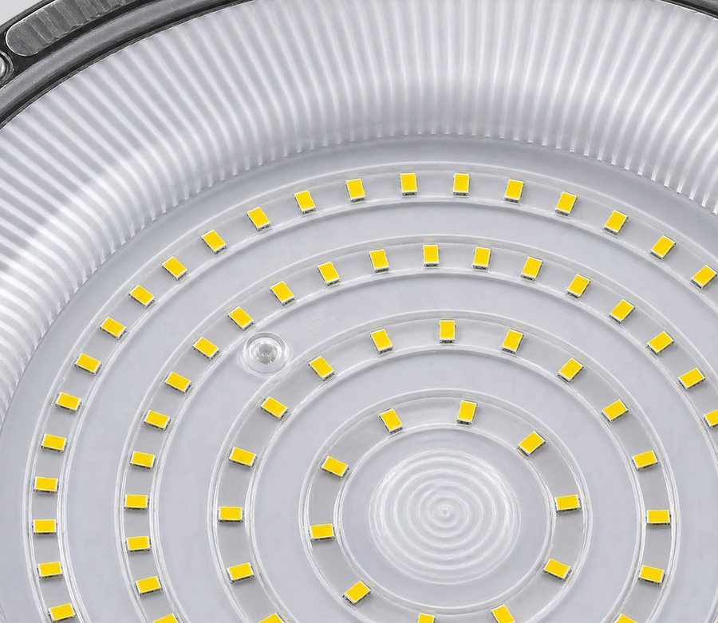

Endüstriyel Armatürler
UFO LED Yüksek Tavan Armatür
UFO LED High Bay Luminaries
Geniş ve yüksek tavanlı alanlar için yüksek verimli ve dayanıklı bir aydınlatma çözümü sunar. IP65 koruma sınıfına sahip elektrostatik boyalı DKP sac gövdesi, zorlu endüstriyel koşullara karşı üstün direnç sağlar.
- Gövde
- Aluminyum
- Renk Sıcaklığı
- 6500K
- Işık Açısı
- 90°
- Garanti
- 1 yıl
SMD LED ışık kaynağı, geniş ışık açısı (150°) ile homojen ve güçlü aydınlatma sunarken, temperli cam difüzör maksimum ışık geçirgenliği sağlar. Sıva üstü, sarkıt ve busbar montaj seçenekleriyle fabrikalar, depolar ve üretim tesisleri için ideal bir çözümdür.
Ürün kodları
| Ürün Kodu | Güç (W) | Işık Akısı (lm) | Renk Sıcaklığı (K) | Etkinlik (lm/W) | Boyutlar (mm) | Koli Adedi |
|---|---|---|---|---|---|---|
| CM-UFO-100 | 100 | 10000 | 6500 | 100 | 260 Ø | 20 |
| CM-UFO-200 | 200 | 20000 | 6500 | 100 | 332 Ø | 10 |
| CM-UFO-300 | 300 | 30000 | 6500 | 100 | 360 Ø | 10 |
| CM-UFO-400 | 400 | 40000 | 6500 | 100 | 400 Ø | 10 |
Ürün kodları kelvin, boyut ve opsiyonlar için değişebilir. Lütfen satış ekibi ile iletişime geçiniz. Teknik sonuçlar çalışma koşullarına bağlı olarak ±%10 toleransa sahiptir.
Teknik özellikler
Koruma sınıfı
IP65
- 6Toza karşı tam korumalı
- 5Su jetlerine dayanıklı
Işık açısı
90°
Renk sıcaklığı
6500K
- 6500K
Çalışma sıcaklığı
-20°C / +55°C
Elektrik
- Giriş Gerilimi
- 220-240V
- Frekans
- 50-60Hz
- Sınıf
- 1
- Sistem Ömrü
- >40-50.000 h/s
- Güç Faktörü
- >0,95
- Çalışma Sıcaklığı
- -20°C / +55°C
Mekanik
- Gövde
- Aluminyum
- IP Sınıfı
- IP65
- Boyutlar
- 260Ø / 332Ø
- Alev Koruması
- 650°C
- Kablo
- 2x1mm
- RAL Kodu
- 9006
- Montaj Tipi
- Sıvaüstü / Sarkıt
Busbar
Optik
- Işık Kaynağı
- SMD LED
- Difüzör
- Lensli
- CRI
- >80
- Renk Sıcaklığı
- 6500K
- Işık Açısı
- 90°
Sürücü
- Sürücü
- CİHAN DOB
Kullanım alanları
- Fabrikalar
- Depolar
- Lojistik merkezleri
- Limanlar
- Gemiler
- Hangarlar


Bu ürün için teklif alın
Adet, boy ve renk sıcaklığını iletin; satış ekibi size dönüş yapsın.